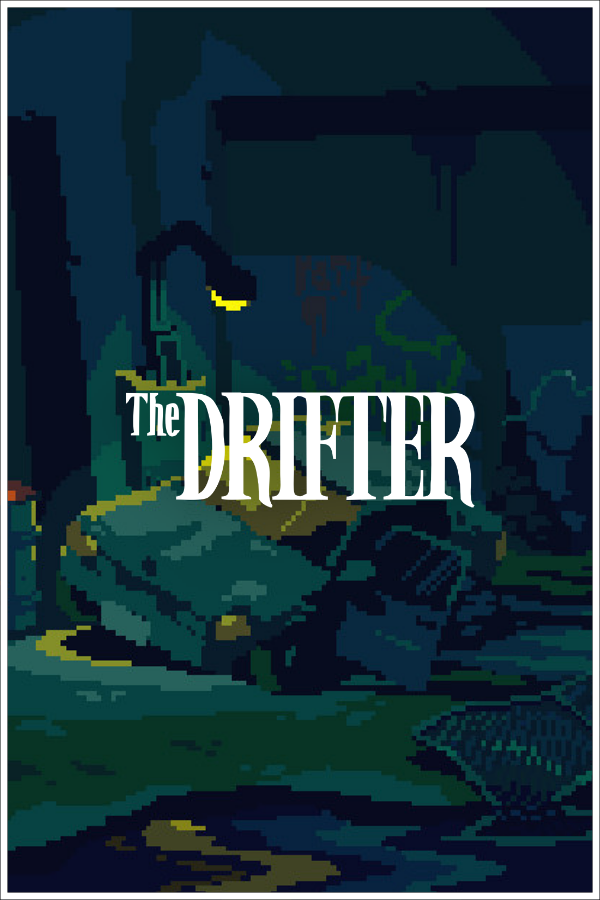

The Drifter
Every archived year-end list appearance, including placement and points earned.
About the Game
FEATURES A Pulp Adventure Thriller from the minds that brought you Crawl and Peridium An engrossing roller-coaster of a story - Drawing on King, Crichton and Carpenter, with a dash of 70s Ozploitation. Point 'N Click or Controller - Featuring unique LOOK-360™* technology (*not actually a trademark) Brooding dark-synth cinematic score Fully voiced - Featuring the vocal stylings of Adrian "YeOldShimpEyes" Vaughan and many othersSYNOPSISMick Carter's been drifting a while now - never staying one place long, moving from job to job. Forced to return to his old home town, he witnesses a violent murder, is pursued by mysterious armed men, and killed. And that's just the start of Mick's problems. His consciousness ripped away, thrust back into his own body seconds before his death... Framed for the murder he witnessed, tormented by his own past, and haunted by a feeling that something followed him back from the other side... Follow Mick as he's sucked headfirst into a mad web of shadowy corporations, murder, and the thousand year obsession of a madman.GAMEPLAYThe Drifter is a 2d point and click adventure in the classic style. Taking cues from the recent revival of the genre there is an emphasis on story, with puzzle solving being the glue that ties it together rather than the focus. Mick's a pretty practical guy, and so puzzles are down-to-earth, designed to be unobtrusive, and give an investigative feel. We're keeping the pacing is quick and lean, you'll never be wandering around lost for long periods - Mick is propelled through the story at a good clip, from one situation to another, with barely a moment to catch his breath.
| Released | 2025-07-17 |
|---|---|
| Developer | Powerhoof |
| Publisher | Powerhoof |
| Genres | Adventure, Indie |
| Platforms | Linux, macOS, PC |
SingleplayerFull controller supportAtmosphericGreat SoundtrackStory RichHorrorViolentDarkPoint & ClickMysteryFast-PacedThriller
Game information provided by RAWG.
Points by Year
List History
| Year | Source | List | Placement | Points |
|---|---|---|---|---|
| 2025 | NPR | The best games of 2025, picked by NPR's staff | Unranked | 1 |
| 2025 | WayTooManyGames | Top 20 Best Games of 2025 | 11 | 3 |